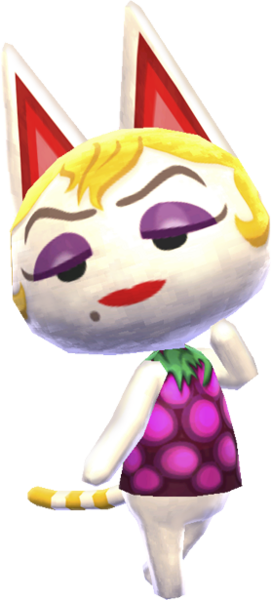
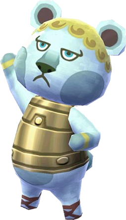
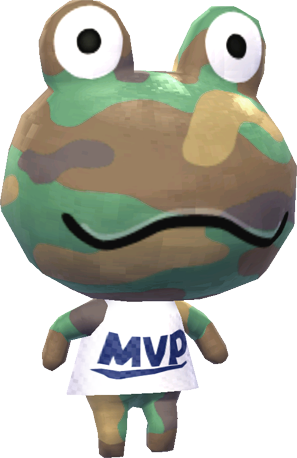

1. Monique

Many Animal crossing fans do not like Monique because of her beauty mark and the fact that she's a snooty type villager, but many people fail to realize that her character design is actually meant as a tribute to Andy Warhol's paintings of Marilyn Monroe. Her hair, eyes, and beauty mark are meant to resemble Marilyn Monroe's complection, and the color schemes of her outfits and home correspond with the colors used in Warhol's famous painting. This is my second favorite Villager based on a real person, next to that one flamingo character who's based off of a grandmother who clocked 100+ hours into Animal Crossing: Wild World when playing with her grandkids.
2. Klaus 
Klaus is a really interesting character because his design is based off of ancient Rome and gladiators. While this Villager has a stern personality type, he always gives players the best gifts. I rate this villager at a solid 8/10. He is not necessarilly the cutest character in the franchise, but he certainly will not be evicted if he moves to my island.
3. Camofrog 
While Camofrog undoubtedly has the most unoriginal name in the entire game, it's hard not to fall in love with the adorable design of this character. His "lazy" personality makes him one of the sweetest characters so his personality makes up for the lack of uniqueness in his name. He's a great villager and he knows it, which is seen through his default outfit: A shirt that says "MVP," or "Most Valuable Player." Now that I think about it, he may actually be athletic-type and not lazy-type, but either way he's a super fun villager.